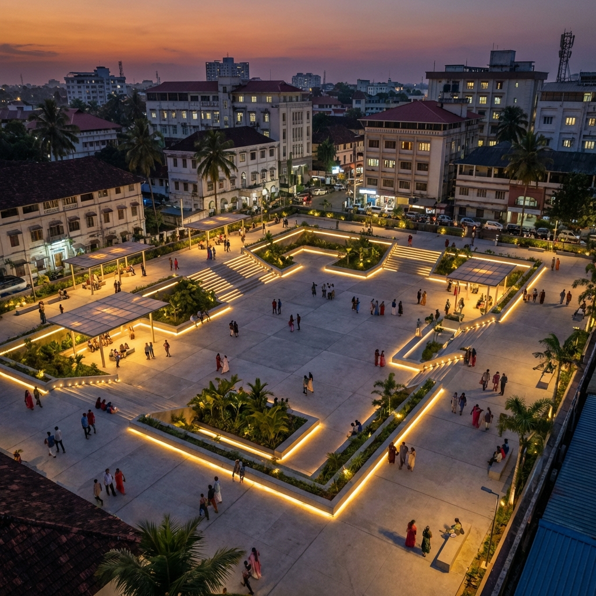
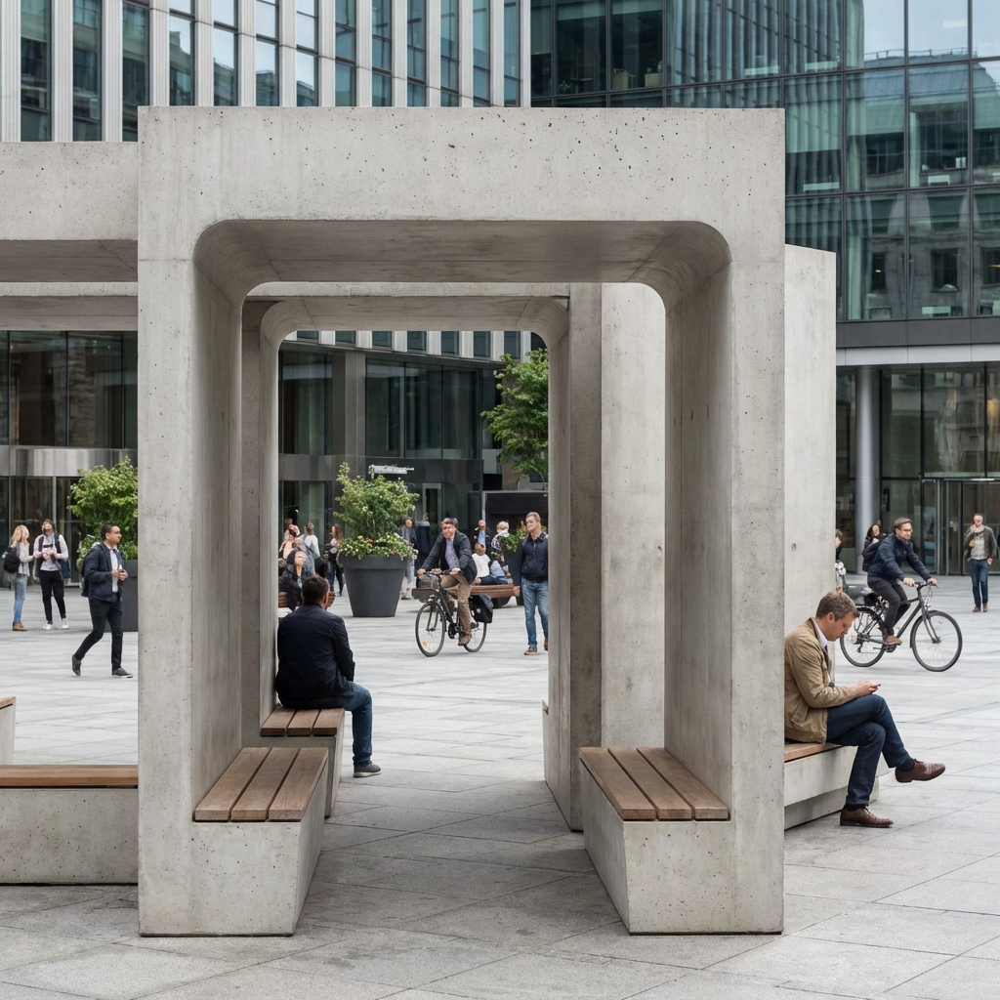

Ponathil House
Climate Response
Designed for the architect's own family, Ponathil House is a contemporary interpretation of traditional tropical architecture. It prioritizes the local climate of central Kerala — characterized by high humidity and heavy monsoon rainfall — to create a deeply comfortable living environment without over-reliance on mechanical cooling.
Open Living
The house features an open-plan layout of two distinct blocks joined by a central gap. This strategy facilitates continuous cross-ventilation and brings natural light deep into every living space. The connecting bridge acts as a threshold — a covered outdoor transition between the private and semi-public zones of the home.
 Process / Section
Process / Section

